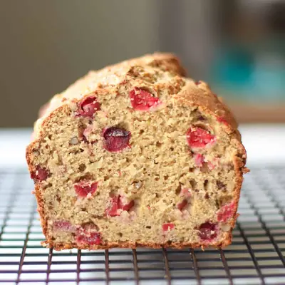

Cranberry Banana Bread

Ingredients
- 2 cups white whole wheat flour (245g)
- 1 teaspoon baking powder
- 1/2 teaspoon baking soda
- 1/4 teaspoon salt
- 1 cup mashed banana (240g), about 2 1/2-3 medium bananas
- 1/3 cup Greek yogurt (78g)
- 2 eggs, room temperature
- 1/4 cup unsalted butter, melted
- 1/4-1/3 cup maple syrup (see note)
- 1 teaspoon vanilla extract
- 1 cup fresh cranberries, cut large ones in half (110g)
- 1/2 cup chopped walnuts
Steps
- Preheat oven to 350 degrees Fahrenheit. Prepare a 8x4 loaf pan by greasing it with oil or butter or lining with parchment paper. Set aside.
- Mash bananas in a medium bowl using the back of a fork or a potato masher. Try to get it as smooth as possible but small lumps are fine. Measure out 1 cup.
- To the same bowl, add all the wet ingredients and mix together until well combined.
- In a large bowl, combine all the dry ingredients. Add the wet ingredients and mix until just combined. Be careful not to over mix.
- Gently stir in cranberries and walnuts. Evenly distribute the batter into the prepared pan. Bake for for 45-60 minutes, or until the toothpick comes out clean when inserted into the center of the bread.
- Cool for 5 minutes in the pan then transfer to a wire rack to cool completely.
Recipe by Min Kwon · Kidfriendly Meals, from MJ and Hungryman. Saved here for personal use; the original has the full notes, tips and photos. Open original